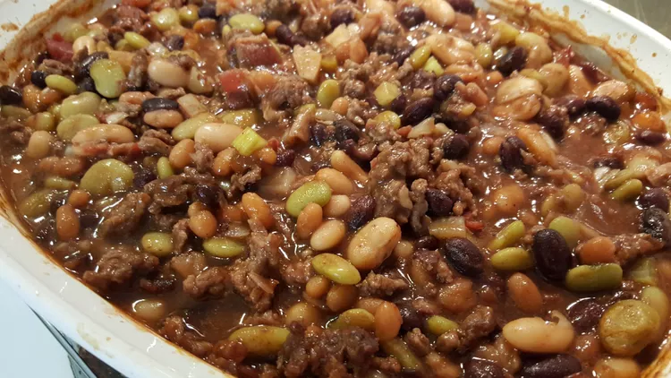

Calico Beans Recipe

Description
This calico beans casserole is the best! I take it to potlucks, picnics, camping trips, etc.
Ingredients
- 1 pound lean ground beef
- ½ cup bacon, chopped
- 1 (15 ounce) can pork and beans
- 1 (15 ounce) can kidney beans, drained
- 1 (15 ounce) can butter beans
- 1 (15 ounce) can lima beans, drained
- 1 cup packed brown sugar
- 1 cup chopped onion
- ½ cup chopped celery
- ½ cup ketchup
- 3 tablespoons white wine vinegar
- 1 teaspoon mustard powder
Steps
- Preheat the oven to 350 degrees F (175 degrees C).
- Cook ground beef and bacon in a large, deep skillet over medium-high heat until evenly brown.
Drain and transfer meat to a 4-quart casserole dish.
- Add pork and beans, kidney beans, butter beans, lima beans, brown sugar, onion, celery, ketchup,
vinegar, and dry mustard to the casserole dish; mix well.
- Bake, covered, in the preheated oven until bubbly and heated through, about 1 hour.
Main Page